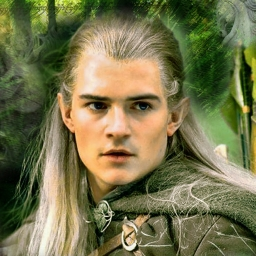
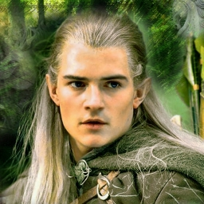

Gospodar prstenova poèinje otprilike 60 godina nakon završetka Hobita. Prvi dio prièe poèinje u "Prstenovoj družini", kada
Frodo Baggins, Bilbov neæak, dobiva Bilbov jedinstveni prsten. Bilbov stari prijatelj, Gandalf Sivi otkriva da je
taj prsten zapravo Jedinstveni Prsten, objekt Sauronove moæi, a ujedno i predmet kojeg Mraèni gospodar traži veæinu Treæeg doba,
predmet koji iskvari srca drugih u želji da ga posjeduju i upravljaju moæi koju on posjeduje.
Na Elrondovom savjetu prisustvuju predstavnici rasa Meðuzemlja, Vilenjaci, Patuljci i Ljudi. Voðeni Elrondom, dolaze do
zakljuèka da mogu spasiti Meðuzemlje samo ako odnesu Prsten u zemlju sjenki, Mordor i unište ga u Kletoj gori, gdje je i
iskovan.
 |
   |